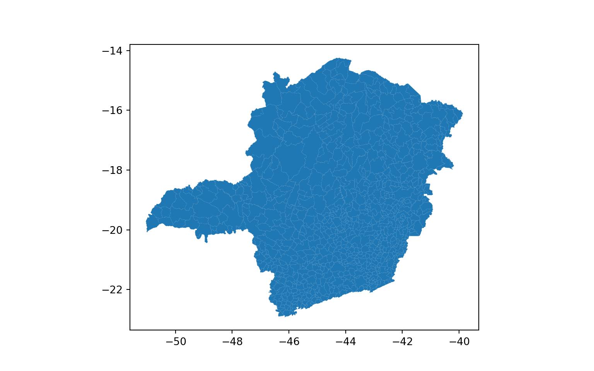
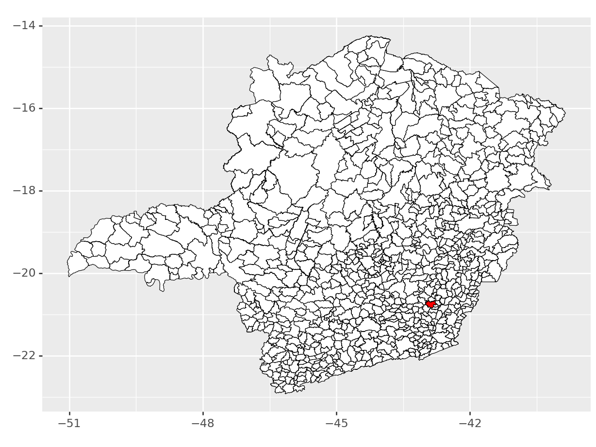

1 R e Python
O suporte Python em R Markdown e knitr é baseado no pacote reticulado ( Ushey, Allaire e Tang 2023 ) , e uma característica importante deste pacote é que ele permite a comunicação bidirecional entre Python e R. Por exemplo, você pode acessar ou crie variáveis Python da sessão R por meio do objeto py em reticulate:
- observe que a identificação do chunk muda, agora é
{python}
# Importa a biblioteca GeoPandas com um alias 'gp'.
import geopandas as gp
# Importa as funções específicas do pacote plotnine.
from plotnine import (
ggplot, # Função principal para criar um gráfico.
aes, # Função para definir mapeamentos estéticos.
geom_map, # Adiciona camadas de mapas ao gráfico.
geom_text, # Adiciona rótulos de texto ao gráfico.
labs, # Adiciona títulos e rótulos aos eixos.
scale_fill_brewer, # Aplica uma escala de cores baseada na paleta Brewer.
scale_x_continuous, # Define a escala do eixo x como contínua.
scale_y_continuous, # Define a escala do eixo y como contínua.
scale_size_continuous, # Define a escala de tamanho como contínua.
coord_cartesian, # Define as coordenadas cartesianas do gráfico.
element_rect, # Adiciona elementos retangulares ao gráfico.
theme_void, # Aplica um tema "vazio" ao gráfico.
theme # Função para personalizar o tema do gráfico.
)- Agora vamos importar o shp (arquivo
mg_muns_3.shp)
# Lê o arquivo shapefile e cria um GeoDataFrame chamado mg_muns_3.
mg_muns_3 = gp.read_file("data/mg_muns_3.shp")
# Define a coluna "NM_MUN" como índice do GeoDataFrame.
mg_muns_3 = mg_muns_3.set_index("NM_MUN")
# Define a coluna "geometry" como a geometria principal do GeoDataFrame.
mg_muns_3 = mg_muns_3.set_geometry("geometry")
# Obtém o sistema de coordenadas de referência (CRS) atual do GeoDataFrame.
crs_atual = mg_muns_3.crs
# Exibe o sistema de coordenadas de referência atual.
print("Sistema de Coordenadas de Referência Atual:", crs_atual)## Sistema de Coordenadas de Referência Atual: EPSG:4674- Alterando o sistema de coordenadas de referencia (crs: coordinate reference system)
# Converte o GeoDataFrame para um novo sistema de coordenadas de referência (CRS) usando o código EPSG 4674.
mg_muns_3 = mg_muns_3.to_crs(4674)
# Gera um gráfico dos municípios usando a geometria do GeoDataFrame.
mg_muns_3.plot()
- plotar um mapa com destaque para Viçosa
# Filtra o GeoDataFrame mg_muns_3 para obter apenas os dados do município de Viçosa.
vicosa = mg_muns_3.query('NM_MUN=="Viçosa"')
# Cria um gráfico usando ggplot.
# Adiciona uma camada de mapas para todos os municípios em branco.
# Adiciona uma camada de mapas para o município de Viçosa em vermelho.
ggplot() + geom_map(mg_muns_3, fill="white", color="black", size=0.25) + geom_map(vicosa, fill="red", color="black", size=0.25)## <Figure Size: (640 x 480)>